Lecture 17 Workbook
This workbook holds the notes and the questions for Lecture 17. Each section starts with notes that explain everything on the slides, and a little more. Answer the questions as we discuss the slides. For a multiple-choice question, circle one letter. Section 8 is the animal shelter problem, to do at home as practice. Section 10 has two complete programs to write after class. By the end, you should be able to:
- explain why a subclass is a subtype, and use a subclass object where its superclass is expected;
- keep objects of several subclasses in one list of the superclass type;
- tell the declared type of a variable from the actual type of its object, and say which calls compile;
- write a cast, and say whether a cast is refused by the compiler or fails when the program runs;
- explain why every class is a subclass of
Object; and - write complete programs that keep several kinds of object in one list.
1. One list
The notice board so far
In Lecture 16 we moved what every notice shares, an author and a pin count, into the superclass Notice. TextNotice, EventNotice and JobNotice extend it, and each adds its own fields and its own printSummary() method. The board, however, still keeps one list for each kind of notice.
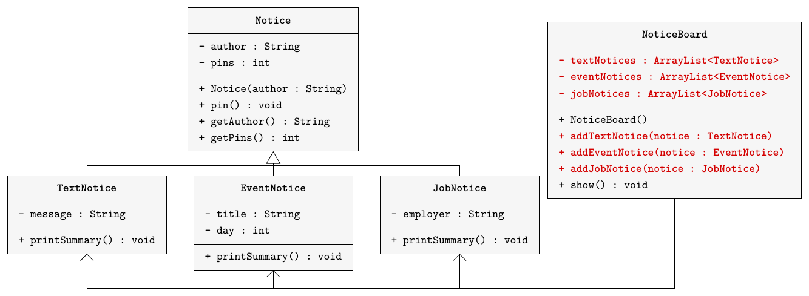
Here is the board. The parts in red are repeated once for each kind of notice.
import java.util.ArrayList;
public class NoticeBoard
{
private ArrayList<TextNotice> textNotices;
private ArrayList<EventNotice> eventNotices;
private ArrayList<JobNotice> jobNotices;
public NoticeBoard()
{
textNotices = new ArrayList<>();
eventNotices = new ArrayList<>();
jobNotices = new ArrayList<>();
}
public void addTextNotice(TextNotice notice)
{
textNotices.add(notice);
}
public void addEventNotice(EventNotice notice)
{
eventNotices.add(notice);
}
public void addJobNotice(JobNotice notice)
{
jobNotices.add(notice);
}
public void show()
{
for(TextNotice notice : textNotices) {
notice.printSummary();
}
for(EventNotice notice : eventNotices) {
notice.printSummary();
}
for(JobNotice notice : jobNotices) {
notice.printSummary();
}
}
}The demo makes four notices: ada's text notice, pinned twice; bo's event "Hackathon" on day 12, pinned once; chen's text notice; and dara's job at the Campus Bookstore. It adds them to the board in that order and calls show(), which prints:
ada: Study group at 4pm. pins: 2 chen: Lost calculator. pins: 0 bo: Hackathon, day 12 pins: 1 dara: job at Campus Bookstore pins: 0
The problem
The board has three lists, three add methods and three loops in show(), and it is 37 lines long. Every new kind of notice needs a fourth list, a fourth add method and a fourth loop. The board also prints by kind: both text notices come first, although bo's event was added before chen's text notice.
The goal: one list
We would like one list that holds every notice, whatever its kind, in the order the notices were added.
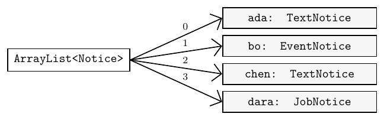
with four elements: 0 ada: TextNotice, 1 bo: EventNotice, 2 chen: TextNotice, 3 dara: JobNotice." loading="lazy" style="max-width: 520px">The list's element type becomes Notice, the superclass:
private ArrayList<Notice> notices;
public NoticeBoard()
{
notices = new ArrayList<>();
}For this to work, Java must let a TextNotice go into a list of Notice. The next section explains when it does.
Practice
1.1 A fourth kind of notice, PhotoNotice, extends Notice. List every change that the three-list board above needs before it can show photo notices.
1.2 The demo adds ada (text), bo (event), chen (text) and dara (job), in that order. In which order does the three-list board print the authors?
- ada, bo, chen, dara
- ada, chen, bo, dara
- dara, chen, bo, ada
- bo, ada, chen, dara
1.3 Which type should the board's single list have, so that it can hold every kind of notice?
ArrayList<TextNotice>ArrayList<String>ArrayList<Notice>ArrayList<JobNotice>
1.4 When the board changes to one list, which code has to change?
- All five classes, because each notice must know about the new list.
- Only
NoticeBoard, and the demo's calls to the add methods. NoticeandNoticeBoard, becauseNoticemust store the list.- The three subclasses, which must now extend
NoticeBoard.
2. Subtypes
Classes are types
Every class is also a type. When we declare TextNotice first, the type TextNotice says what the variable first may refer to. A subclass defines a subtype of its superclass: TextNotice, EventNotice and JobNotice are subtypes of Notice. This matches the is-a test from Lecture 16: every text notice is a notice.
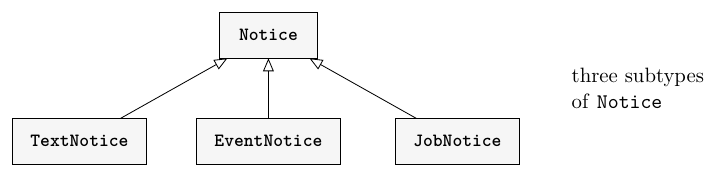
Substitution
A variable of a superclass type can refer to an object of any of its subclasses.
Notice n = new TextNotice("ada", "Study group at 4pm.");
Notice m = new JobNotice("dara", "Campus Bookstore");Wherever an object of the superclass is expected, an object of a subclass may be used instead. This is called substitution. It is safe because a text notice has every field and every method that a notice has, so anything we can ask of a notice, we can ask of a text notice.
Only from subclass to superclass
Substitution does not work the other way round.
Notice n = new TextNotice("ada", "Study group at 4pm.");
TextNotice t = n;error: incompatible types: Notice cannot be converted to TextNotice
The compiler checks each line on its own. On the second line it sees only that n is a Notice. Not every notice is a text notice: n might refer to an event notice. So Java refuses the line, although this particular n refers to a text notice.
Substitution in method calls
A parameter is a variable too, and passing an argument stores the argument in the parameter. So the same rule applies: a parameter of type Notice accepts a text notice, an event notice or a job notice.
public void addNotice(Notice notice)
{
notices.add(notice);
}board.addNotice(first); // a TextNotice
board.addNotice(second); // an EventNotice
board.addNotice(fourth); // a JobNoticeOne add method replaces three. Inside it, notices.add(notice) works for the same reason: the add method of an ArrayList<Notice> expects a Notice.
Practice
2.1 Write yes or no: does each line compile? Notice has the constructor Notice(String author).
| Line | Compiles? |
|---|---|
Notice n = new EventNotice("bo", "Hackathon", 12); | |
TextNotice t = new Notice("eli"); | |
EventNotice e = new TextNotice("ada", "Study group at 4pm."); | |
Notice m = new JobNotice("dara", "Campus Bookstore"); | |
Object o = new TextNotice("chen", "Lost calculator."); | |
JobNotice j = new Notice("dara"); |
2.2 In the example above, n refers to a text notice. Why does Java still refuse TextNotice t = n;?
2.3 Which sentence is true?
- Every
Noticeis aTextNotice. - Every
TextNoticeis aNotice. - Every
EventNoticeis aTextNotice. Noticeis a subtype ofTextNotice.
2.4 The board has the method addNotice(Notice notice). After the line below, which call does not compile?
Notice n = new JobNotice("dara", "Campus Bookstore");board.addNotice(n);board.addNotice(new Notice("fay"));board.addNotice("Lost keys");board.addNotice(new JobNotice("eli", "Library"));
2.5 A method is declared public void welcome(Notice notice). Which arguments can it be given?
- Only objects made with
new Notice(...). - Only
TextNoticeobjects. - Any
Notice,TextNotice,EventNoticeorJobNoticeobject. - Any object at all, including a
String.
3. New board
NoticeBoard with one list
Here is the new board. It has one ArrayList<Notice>, one add method, and one loop in show(). It drops from 37 lines to 20, and the four notice classes do not change at all.
import java.util.ArrayList;
public class NoticeBoard
{
private ArrayList<Notice> notices;
public NoticeBoard()
{
notices = new ArrayList<>();
}
public void addNotice(Notice notice)
{
notices.add(notice);
}
public void show()
{
for(Notice notice : notices) {
System.out.println(notice.getAuthor() + " pins: " + notice.getPins());
}
}
}The demo
The demo makes the same four notices as before and adds each one with addNotice.
public class NoticeBoardDemo
{
public static void main(String[] args)
{
TextNotice first = new TextNotice("ada", "Study group at 4pm.");
EventNotice second = new EventNotice("bo", "Hackathon", 12);
TextNotice third = new TextNotice("chen", "Lost calculator.");
JobNotice fourth = new JobNotice("dara", "Campus Bookstore");
first.pin();
first.pin();
second.pin();
NoticeBoard board = new NoticeBoard();
board.addNotice(first);
board.addNotice(second);
board.addNotice(third);
board.addNotice(fourth);
board.show();
}
}Output
ada pins: 2 bo pins: 1 chen pins: 0 dara pins: 0
The notices now print in the order they were added, because one list keeps that order. One loop prints all four kinds.
The loop variable
In show(), the loop variable notice has the type Notice on every turn. The objects it refers to are of different classes.
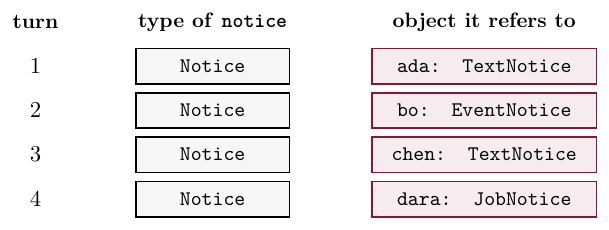
Why show() does not call printSummary()
The old show() printed each notice's summary. Calling it in the new loop does not compile.
for(Notice notice : notices) {
notice.printSummary();
}error: cannot find symbol symbol: method printSummary() location: variable notice of type Notice
Each subclass writes its own printSummary(), but Notice has none. The variable's type is Notice, so the loop may call only the Notice methods: pin(), getAuthor() and getPins(). That is why the new show() prints just the author and the pins. Chapter 13 shows how each notice can print its full summary from this one loop.
A list for every mammal
The same rule works in any hierarchy. Here Mammal extends Animal, and Cat and Dog extend Mammal. A Cat has the method meow() and a Dog has bark().
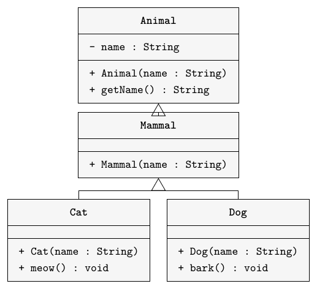
ArrayList<Mammal> mammals = new ArrayList<>();
mammals.add(new Cat("Tom"));
mammals.add(new Dog("Rex"));
for(Mammal m : mammals) {
System.out.println(m.getName());
}Tom Rex
A list of Mammal takes a Mammal or an object of any subclass of Mammal. An ArrayList<Cat> would refuse Rex, and an ArrayList<Animal> would also take animals that are not mammals. When we add a variable, Java looks at the variable's type, not at the object it refers to.
Practice
3.1 This demo uses the new board. Write what it prints, and say why fay's notice shows 2 pins although it was pinned after it was added.
NoticeBoard board = new NoticeBoard();
JobNotice job = new JobNotice("eli", "Library");
TextNotice text = new TextNotice("fay", "Room 2 is free.");
board.addNotice(job);
board.addNotice(text);
text.pin();
text.pin();
job.pin();
board.addNotice(new EventNotice("gil", "Git basics", 5));
board.show();| Line | Printed |
|---|---|
| 1 | |
| 2 | |
| 3 |
Why does fay's notice show 2 pins?
3.2 Write one line that creates a list for every mammal: cats, dogs and any other Mammal. Then say why ArrayList<Cat> and ArrayList<Animal> are the wrong choices.
3.3 The classes are Animal, Mammal, Cat and Dog, as above. After these declarations, write yes or no: does each numbered line compile?
ArrayList<Mammal> mammals = new ArrayList<>();
ArrayList<Animal> animals = new ArrayList<>();
ArrayList<Cat> cats = new ArrayList<>();
Mammal m = new Dog("Rex");
Animal a = new Cat("Tom");| Line | Compiles? | |
|---|---|---|
| 1 | mammals.add(new Cat("Tom")); | |
| 2 | mammals.add(new Dog("Rex")); | |
| 3 | mammals.add(new Mammal("Moby")); | |
| 4 | mammals.add(new Animal("Nemo")); | |
| 5 | mammals.add(m); | |
| 6 | mammals.add(a); | |
| 7 | animals.add(new Dog("Rex")); | |
| 8 | cats.add(new Dog("Rex")); |
3.4 Inside the loop for(Notice notice : notices), which call compiles?
notice.printSummary()notice.getPins()notice.getMessage()notice.getEmployer()
3.5 With the declarations of 3.3, which line does not compile?
animals.add(m);mammals.add(new Cat("Tom"));animals.add(new Animal("Nemo"));cats.add(new Mammal("Moby"));
3.6 Why does the new show() print only the author and the pins of each notice?
- Because
printSummary()is private in each subclass. - Because the loop variable is a
Notice, andNoticehas noprintSummary(). - Because an
ArrayList<Notice>can hold only objects made withnew Notice(...). - Because adding a notice to the list removes the fields of its subclass.
4. Declared type
Declared type and actual type
Every variable that refers to an object involves two types.
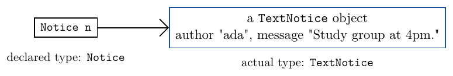
The declared type is the type written when the variable is declared, here Notice. It never changes. The actual type is the class of the object the variable refers to, here TextNotice: the class named after new. If we later store a job notice in n, the actual type becomes JobNotice, while the declared type is still Notice.
The declared type decides which calls compile
Notice n = new TextNotice("ada", "Study group at 4pm.");
n.pin(); // fine: pin() is in Notice
n.printSummary(); // compile error: not in NoticeThe object really is a text notice, and it still has printSummary(). But the compiler looks only at the declared type, so it allows only the methods of Notice. Storing an object in a Notice variable does not change the object; it only limits what we may call through that variable.
Type loss
A list of Notice gives back each element as a Notice, and the loop variable in show() is a Notice. What the subclass adds is out of sight. This is called type loss.
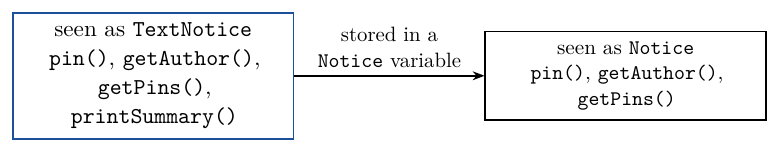
The next section shows how to get the subclass methods back with a cast.
Practice
4.1 Write the declared type and the actual type for each variable.
| Declaration | Declared type | Actual type |
|---|---|---|
Notice n = new JobNotice("dara", "Campus Bookstore"); | ||
Animal a = new Cat("Tom"); | ||
Mammal m = new Dog("Rex"); | ||
Object o = "hello"; |
4.2 After Notice n = new EventNotice("bo", "Hackathon", 12);, write yes or no: does each call compile?
| Call | Compiles? |
|---|---|
n.pin(); | |
n.getAuthor(); | |
n.printSummary(); | |
n.getPins(); |
4.3 After Notice n = new TextNotice("ada", "Study group at 4pm.");, what is the actual type of the object n refers to?
Notice, because it was stored in aNoticevariable.TextNoticeObject- It has no type until a method is called on it.
4.4 What decides whether n.printSummary() compiles?
- The actual type of the object that
nrefers to. - The declared type of
n. - Whether
nhas been pinned. - Whether the object was added to a board.
4.5 The new board's first element is ada's text notice. Which type does the compiler give notices.get(0)?
TextNotice, because ada's text notice was added first.NoticeObjectArrayList<Notice>
5. Casts
Casting back to a subclass
When we know the actual class of an object, a cast gives the subclass type back.
Notice n = new TextNotice("ada", "Study group at 4pm.");
n.pin();
TextNotice t = (TextNotice) n;
t.printSummary();ada: Study group at 4pm. pins: 1
A cast writes a type in brackets before an expression: (TextNotice) n. It tells the compiler "this notice is a text notice". The expression now has the type TextNotice, so it can be stored in t, and t.printSummary() compiles. The cast does not change or copy the object: n and t refer to the same object, which is why the summary shows the pin added through n.
A wrong cast
A cast is a promise, and Java checks it when the program runs.
Notice n = new EventNotice("bo", "Hackathon", 12);
TextNotice t = (TextNotice) n;Exception in thread "main" java.lang.ClassCastException: class EventNotice cannot be cast to class TextNotice
This compiles, because a Notice might be a text notice. When it runs, Java looks at the actual object. It is an event notice, so the cast fails with a ClassCastException and the program stops.
An impossible cast
String s = "hello";
Notice n = (Notice) s;error: incompatible types: String cannot be converted to Notice
A String can never be a Notice: neither class is a subclass of the other. The compiler knows this, so it refuses the cast before the program runs.
Two checks
A cast is checked twice.
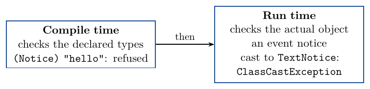
A cast that can never work is a compile error. A cast that might work compiles, and is checked again when it runs: it succeeds if the object is of that class or one of its subclasses, and throws ClassCastException otherwise.
When to use a cast
Cast only when you know the actual class of the object, for example because you just looked it up by a name that only a dog has. A wrong guess stops the program. A later chapter shows a safe way to test an object's class before a cast. Good designs need few casts: Chapter 13 shows how the loop in show() can call each kind's own printSummary() with no cast at all.
Practice
5.1 After these lines, write two lines that print bo's full summary with printSummary(). Then write the output.
Notice n = new EventNotice("bo", "Hackathon", 12);
n.pin();Write the two lines in the box. It makes bo's event notice and pins it, as above, then runs your lines.
5.2 With the mammal classes of Section 3, write fine, compile error or run-time error for each numbered line. Each line is tried on its own.
Animal a = new Cat("Tom");
Mammal m = new Dog("Rex");| Line | Result | |
|---|---|---|
| 1 | a.getName(); | |
| 2 | a.meow(); | |
| 3 | ((Cat) a).meow(); | |
| 4 | Mammal x = a; | |
| 5 | Mammal y = (Mammal) a; | |
| 6 | ((Dog) m).bark(); | |
| 7 | ((Cat) m).meow(); | |
| 8 | String s = (String) a; |
5.3 After Notice n = new JobNotice("dara", "Campus Bookstore");, write fine, compile error or run-time error for each line.
| Line | Result |
|---|---|
JobNotice j = (JobNotice) n; | |
TextNotice t = (TextNotice) n; | |
String s = (String) n; | |
Object o = n; | |
JobNotice k = n; |
5.4 What does the cast in TextNotice t = (TextNotice) n; change?
- It turns the object into a
TextNotice. - Only the type the compiler uses for the expression; the object stays the same.
- It makes a copy of the object with the type
TextNotice. - It changes the declared type of
nfor the rest of the method.
5.5 When is a ClassCastException thrown?
- When the program is compiled and the two types are unrelated.
- When the program runs and the object is not of the class named in the cast.
- Every time a cast is used.
- When a subclass object is stored in a superclass variable.
5.6 n is declared as a Notice. Which cast does the compiler refuse?
(TextNotice) n(JobNotice) n(Object) n(String) n
6. Object
The superclass of every class
Java has a class called Object at the top of every hierarchy. A class written without extends extends Object. So Notice extends Object, TextNotice extends Notice, and every object, including every String, is an Object.
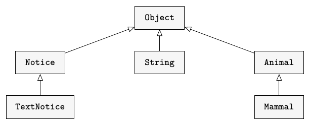
An Object variable
Because every object is an Object, a variable of type Object can refer to anything. But the declared type decides which calls compile, and Object has only a few general methods, none of them ours.
Object o = new TextNotice("ada", "Study group at 4pm.");
o = "hello"; // fine: a String is an Object
o = new TextNotice("chen", "Lost calculator.");
System.out.println(o.getAuthor());error: cannot find symbol symbol: method getAuthor() location: variable o of type Object
The most specific type
An ArrayList<Object> could hold notices, strings, anything, but each element would come back as an Object, so we could not even call getAuthor(). An ArrayList<Notice> holds only notices, and each element comes back as a Notice.
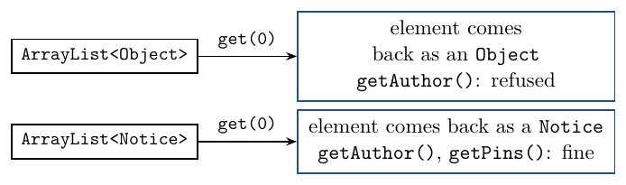
gives the element back as an Object, so getAuthor() is refused. get(0) on an ArrayListChoose the most specific type that covers every element you want to store. The compiler then refuses anything else, and lets you call every method that all the elements share.
Practice
6.1 Choose the most specific list type for each job. Use the notice classes and the mammal classes.
| What the list must hold | List type |
|---|---|
| every kind of notice | |
| cats only | |
| cats and dogs | |
| notices and strings together |
6.2 Which line does not compile?
Object o = "hello";Object o = new TextNotice("ada", "Study group at 4pm.");Object o = new ArrayList<Notice>();Notice n = new Object();
6.3 Why does the board use ArrayList<Notice> rather than ArrayList<Object>?
- An
ArrayList<Object>cannot hold text notices. - With
Notice, the loop can callgetAuthor(), and the compiler refuses aString. - An
ArrayList<Object>does not keep the order of its elements. ArrayList<Object>does not compile.
6.4 Notice is written as public class Notice, with no extends. What is its superclass?
- It has no superclass.
TextNoticeObjectNoticeBoard
7. Whole program
The class diagram
Here is the whole program. The four notice classes are exactly as in Lecture 16; only NoticeBoard has changed. It is linked to Notice alone, not to each subclass, and the demo's code is in Section 3.
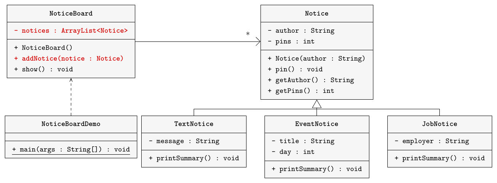
, and the method addNotice(notice : Notice), both shown in red. An arrow marked * goes from NoticeBoard to Notice, and TextNotice, EventNotice and JobNotice extend Notice." loading="lazy" style="max-width: 640px">A new kind of notice
Compare this with 1.1. If we add a class PhotoNotice extends Notice, the board does not change at all: addNotice already accepts a photo notice, and the loop in show() already prints its author and pins. Only the new class and the demo are written.
Practice
7.1 Write a method totalPins() for the new NoticeBoard. It returns the total number of pins on all the notices. For the demo in Section 3, it returns 3.
Add the method to the class below. The box includes the notice classes, adds the four notices of the Section 3 demo and prints totalPins().
7.2 A class PhotoNotice extends Notice is added. What must change in the new NoticeBoard?
- A new list field for photo notices.
- A new method
addPhotoNotice. - Nothing.
- A new loop in
show().
7.3 The demo calls board.addNotice(first), where first is declared TextNotice. Inside addNotice, what is the declared type of the parameter notice?
TextNotice, the type of the argument.NoticeObject- It changes with each call.
8. Practice
This section is the animal shelter problem, to do at home as practice. Try each part before you read its solution.
The starter program
The shelter classes are the ones you wrote in Lecture 16:
Animal(String name, int age)hasgetName(),getAge(),isAdopted()andadopt();Dog(String name, int age, String breed)addsgetBreed();Cat(String name, int age, boolean indoor)addsisIndoor();Rabbit(String name, int age, String colour)addsgetColour().
Each of the three subclasses also has getLabel(). The starter Shelter keeps one list for each kind of animal.
import java.util.ArrayList;
public class Shelter
{
private ArrayList<Dog> dogs;
private ArrayList<Cat> cats;
private ArrayList<Rabbit> rabbits;
public Shelter()
{
dogs = new ArrayList<>();
cats = new ArrayList<>();
rabbits = new ArrayList<>();
}
public void addDog(Dog dog)
{
dogs.add(dog);
}
public void addCat(Cat cat)
{
cats.add(cat);
}
public void addRabbit(Rabbit rabbit)
{
rabbits.add(rabbit);
}
public void printAll()
{
for(Dog animal : dogs) {
System.out.println(animal.getName() + ", age " + animal.getAge());
}
for(Cat animal : cats) {
System.out.println(animal.getName() + ", age " + animal.getAge());
}
for(Rabbit animal : rabbits) {
System.out.println(animal.getName() + ", age " + animal.getAge());
}
}
}The demo makes Rex, a Beagle of age 3; Mia, an indoor cat of age 2; Biscuit, a Collie of age 5; and Clover, a brown rabbit of age 1. It adopts Mia, adds the four in that order, and calls printAll(), which prints by kind:
Rex, age 3 Biscuit, age 5 Mia, age 2 Clover, age 1
Part 1: One list
Replace the three lists with one ArrayList<Animal> animals, and write the three methods in red. printAll() uses one loop. countAdopted() returns how many animals are adopted. Keep Animal, Dog, Cat and Rabbit unchanged. The demo adds the four animals with add, calls printAll(), then prints the adopted count.
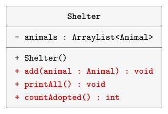
, the constructor Shelter(), and the methods add(animal : Animal), printAll() and countAdopted() : int, shown in red." loading="lazy" style="max-width: 360px">Rex, age 3 Mia, age 2 Biscuit, age 5 Clover, age 1 Adopted: 1
Part 2: Searches
Add two methods to Shelter. findByName(String name) returns the animal with that name, or null if there is none. oldest() returns the animal with the largest age, or null if the shelter is empty. Both return an Animal. The demo finds Rex, casts him to Dog and prints his breed; looks for Max, who is not there; and prints the oldest animal. The new demo prints the five lines of Part 1, then:
Rex breed: Beagle Not found Oldest: Biscuit, age 5
Practice
8.1 Write the class Shelter for Part 1.
The box includes Animal, Dog, Cat and Rabbit, and runs the Part 1 demo.
8.2 Write the methods findByName and oldest for Part 2.
Add the two methods to your Shelter from 8.1. The box includes the four animal classes and runs the Part 2 demo.
8.3 Write the lines of the Part 2 demo that find Rex and print Rex breed: Beagle. Check for null before the cast.
The box includes a model Shelter and the animal classes, and fills the shelter as in the demo. Write the lines that find Rex and print his breed.
8.4 Mia is a cat. What happens when this code runs, and why?
Animal found = shelter.findByName("Mia");
Dog dog = (Dog) found;
System.out.println(dog.getBreed());8.5 After Animal a = new Dog("Rex", 3, "Beagle");, write yes or no: does each line compile? Say why for each no.
| Line | Compiles? |
|---|---|
Dog d = a; | |
a.getBreed(); | |
Dog e = (Dog) a; | |
a.getAge(); |
Why does each no fail?
8.6 After Animal old = shelter.oldest();, which line compiles?
old.getBreed();old.getAge();Dog d = old;old.getLabel();
9. Review
Subtypes, declared types and casts
A subclass is a subtype, so a subclass object can go wherever its superclass is expected: in a variable, as an argument, or in a list. One list of the superclass type can then hold every kind of object. The compiler checks each line against declared types only, so through a superclass variable we can call only superclass methods. A cast gives back the subclass type: it is refused if it can never work, and it throws ClassCastException if the object turns out to be of another class. Every class is a subclass of Object, but choose the most specific type that covers every element.
Practice
9.1 This code has two mistakes, and each one stops it from compiling. Find both and give a fix for each.
ArrayList<Notice> notices = new ArrayList<>();
notices.add(new TextNotice("eli", "Room 2 is free."));
notices.add("Lost keys");
for(Notice notice : notices) {
notice.printSummary();
}Now fix both mistakes in the box: add hal's text notice "Lost keys." instead of the string, and print each author. The box includes the notice classes.
9.2 Write true or false for each statement.
| Statement | True or false? |
|---|---|
A Notice variable can refer to a JobNotice object. | |
| A cast changes the class of the object. | |
| The compiler checks calls against the actual type of the object. | |
| A wrong cast between related classes compiles. |
9.3 A fleet has plain vehicles and trucks, and Truck extends Vehicle. Which list type should the fleet use?
ArrayList<Truck>ArrayList<Vehicle>ArrayList<Object>ArrayList<String>
10. Complete Java Programs
Write these two programs after class. Each reuses a superclass and a subclass from Lecture 16, and adds a class that keeps both kinds in one list, and a demo.
Program A: Fleet
Vehicle(String plate)andTruck(String plate, int maxLoad)are the classes from Lecture 16's Program A.Vehiclehasdrive(int distance),getPlate()andgetKm().Truckextends it and addsgetMaxLoad()andprintDetails(), which prints a line such asTRK-42: 150 km, max load 900 kg.Fleethas one private fieldArrayList<Vehicle> vehicles.add(Vehicle vehicle)adds a vehicle.get(int index)returns the vehicle at that index.printAll()prints one line for each vehicle, such asCAR-7: 30 km.totalKm()returns the total distance of all the vehicles.FleetDemomakes the vehicleCAR-7, the truckTRK-42with a maximum load of 900, and the vehicleVAN-3. The car drives 30 km, the truck 100 km and then 50 km, and the van 20 km. It adds the three in that order and prints them all and the total. Then it gets the vehicle at index 1, casts it toTruck, and callsprintDetails().
FleetThe box includes model Vehicle and Truck classes, adds a car and a truck to a fleet, prints them and the total, and gets the vehicle at index 1.
FleetDemoThe box includes model Vehicle, Truck and Fleet classes and runs your demo.
The demo prints:
CAR-7: 30 km TRK-42: 150 km VAN-3: 20 km Total: 200 km TRK-42: 150 km, max load 900 kg
Program B: Show
Ticket(String seat, int price)andStudentTicket(String seat, int price, String studentId)are the classes from Lecture 16's Program B.TickethasgetSeat()andgetPrice().StudentTicketextends it and addsgetStudentId(),getDiscount()andprintTicket(), which prints two lines such asSeat B12: 15 dollars, student 2001234anddiscount: 3 dollars.Showhas one private fieldArrayList<Ticket> tickets.sell(Ticket ticket)adds a ticket.printSeats()prints one line for each ticket, such asA3: 20 dollars.totalSales()returns the total of the prices.find(String seat)returns the ticket for that seat, ornullif it was not sold.ShowDemosells a ticket for seat A3 at 20 dollars, a student ticket for seat B12 at 15 dollars to student 2001234, and a ticket for seat C5 at 25 dollars. It prints the seats and the total. It finds seat B12, casts it toStudentTicketand callsprintTicket(). Then it looks for seat Z9 and printsZ9 not sold.
ShowThe box includes model Ticket and StudentTicket classes, sells a ticket and a student ticket, prints the seats and the total, and finds one seat that was sold and one that was not.
ShowDemoThe box includes model Ticket, StudentTicket and Show classes and runs your demo.
The demo prints:
A3: 20 dollars B12: 15 dollars C5: 25 dollars Total: 60 dollars Seat B12: 15 dollars, student 2001234 discount: 3 dollars Z9 not sold
Lecture summary
A subclass is a subtype of its superclass, so a subclass object can go wherever the superclass is expected. That lets one list of the superclass type hold every kind of object.
One list
- The board from Lecture 16 had three lists, three add methods and three loops, and it printed the notices by kind, not in the order they were added.
- Every text, event and job notice is a
Notice, so oneArrayList<Notice>can hold them all.
Subtypes
- A class is a type. A subclass is a subtype: every
TextNoticeis aNotice. - Substitution: a subclass object can go where the superclass is expected, in a variable, as an argument or in a list.
Notice n = new TextNotice(...);compiles. - It works only from subclass to superclass.
TextNotice t = n;is refused, because a notice might not be a text notice.
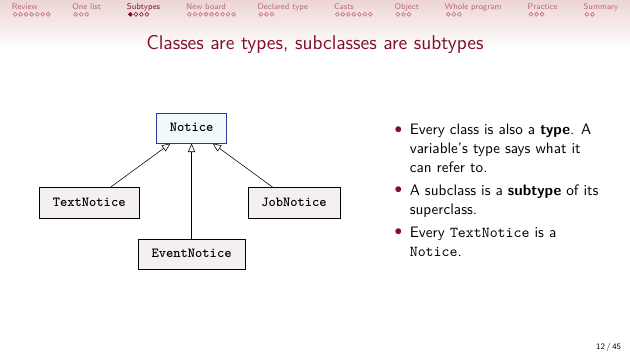
New board
- The new board has one list, one
addNotice(Notice notice)method and one loop, and it prints the notices in the order they were added. - The loop variable is declared
Notice, so the loop can call onlyNoticemethods:getAuthor()andgetPins(), but notprintSummary().
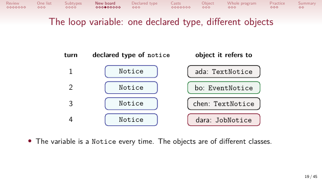
Declared type
- The declared type is written in the declaration; the actual type is the class of the object. In
Notice n = new TextNotice(...);they areNoticeandTextNotice. - The compiler checks each call against the declared type only. The object keeps its actual type and all its fields.
- Type loss:
notices.get(0)on anArrayList<Notice>gives back aNotice, whatever was added.
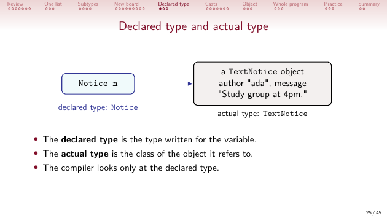
Casts
- A cast
(TextNotice) ngives the expression the subclass type. It changes no object and makes no copy. - A cast that can never work, such as
(String) n, is a compile error. - A cast to the wrong subclass compiles, then throws
ClassCastExceptionwhen the program runs. - Use a cast only when you know the object's class, for example after a search that found Rex the dog.
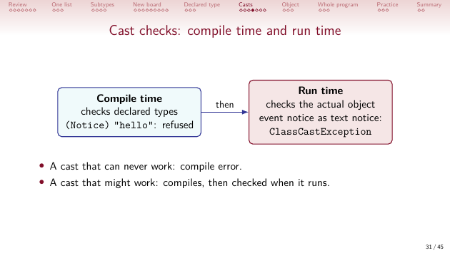
Object
- A class with no
extendsextendsObject, soObjectis the superclass of every class. - An
Objectvariable can hold anything but can call almost nothing. Choose the most specific type that covers every element:ArrayList<Notice>, notArrayList<Object>.
Whole program
- A new kind of notice, such as
PhotoNotice extends Notice, needs no change to the board. - The board still prints only the author and the pins. The next lecture introduces overriding, so the one loop can call each kind's own
printSummary().
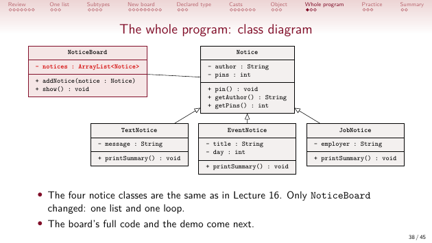
Practice and programs
- The shelter keeps one
ArrayList<Animal>.findByNamereturns anAnimal, so the demo casts Rex toDogbefore callinggetBreed(). Fleetkeeps vehicles and trucks in oneArrayList<Vehicle>, andShowkeeps tickets and student tickets in oneArrayList<Ticket>. Each demo casts one element back to the subclass.